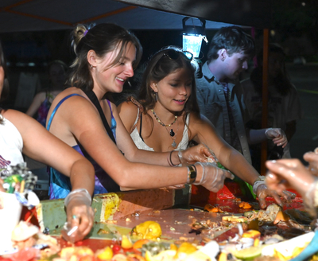

The event is about a sustainability event that my partner, Nola, is excited about. This event takes place every year and this photo was taken from last year of her friends sorting out composted foods and proudly contributing their volunteer services to the community. The most interesting aspect of this photo is the angle of the photo which was taken at a lower angle from the table with composted scraps close to the camera. The lighting of the location is also interesting and mysterious because it seems like a night event even though most volunteer activities happen during the daytime. There is also a blue lamp to give some light to the back which is different from the light source from the camera’s side. A small suggestion that I would give is to wait a few more moments for the girl in blue to take back her arms more because her right arm has a lot of focus since it is extended and centered in the photo.

Nola, 2024
Visual Thinking Strategies Research
Looking through several websites that tell stories through images, a website about the Venezuela Refugee Crisis was one of the more interesting websites that I’ve found. This website uses images to tell a narrative and strike curiosity through black-and-white images with a yellow undertone (their main color is yellow). They also have graphics to visualize data. They use photos as a background element and have graphics move when scrolled. They also use text limitedly to give the most crucial information and allow the images to shine by themselves. I also enjoy the interactive hover effects on some graphics to show various information from one graphic.
Overlays Design Pattern Research
The article, Best Practices for Modals / Overlays / Dialog Windows, brings up some great points about things to consider when creating a pop-up. One of my main reasons for pop-ups is to also save screen real estate and make sure that the pop-up is just the right size for users. One specific detail included is "Don’t use more than 50% of the screen for the overlay," but I am wondering why it must be less than 50%? I believe that a window over 50% can be effective if used correctly. Thinking deeper into the size of pop-ups, I also have specific preferences with pop-ups where I debate if the pop-up should be incorporated into the page like a drop-down or if should it be an overlay? There are some instances where one option is obvious, but the gray areas always keep me thinking.
I also agree that a title and action button are very important for a pop-up. These two elements are not highlighted as often in pop-ups as they should be and they can potentially separate a good design from a great design. Titles are also trending in being the question itself ("Are you sure?") to allow users to make quick decisions and actions. Then, the call-to-action button should already have an action text ("I am sure" or "Back").
Research From Design
I agree with the article’s points about form design! It’s so important to take into account how data is gathered and lighten the mental toll of forms. UX Design starts with user research and a huge part of the research depends on quantitative data. As a UX researcher, I understand that filling out forms for my fellow researchers is important, but it’s also mentally tiring for me to fill out forms. If we have better practices of form design, it will increase the rate of people completing forms and gaining better insight.
Forms are also the first thing that new users will face to potentially become loyal users, so designers need to make this process as easy and smooth as possible. As the article says, having a difficult first question decreases the completion rate of the form. One of my favorite forms that I’ve filled out is the CalFresh application form which includes a single short question per page and has the question written as the sub-header. This makes the process easier for me to answer the question as the first thing that I read is the question and the body text helps me understand why they need this information.